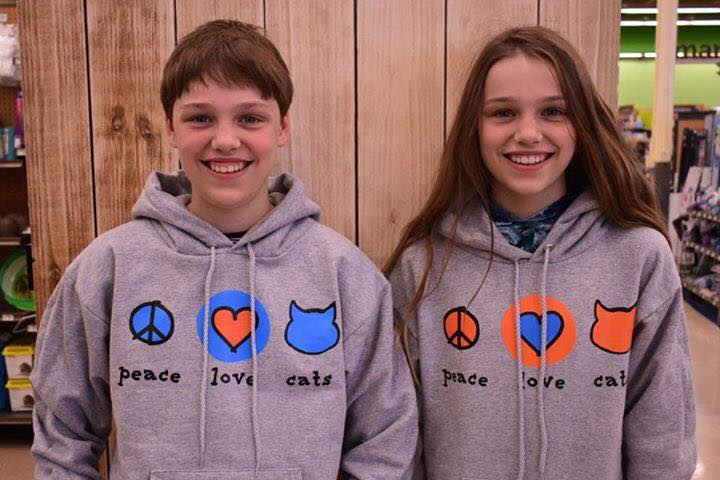
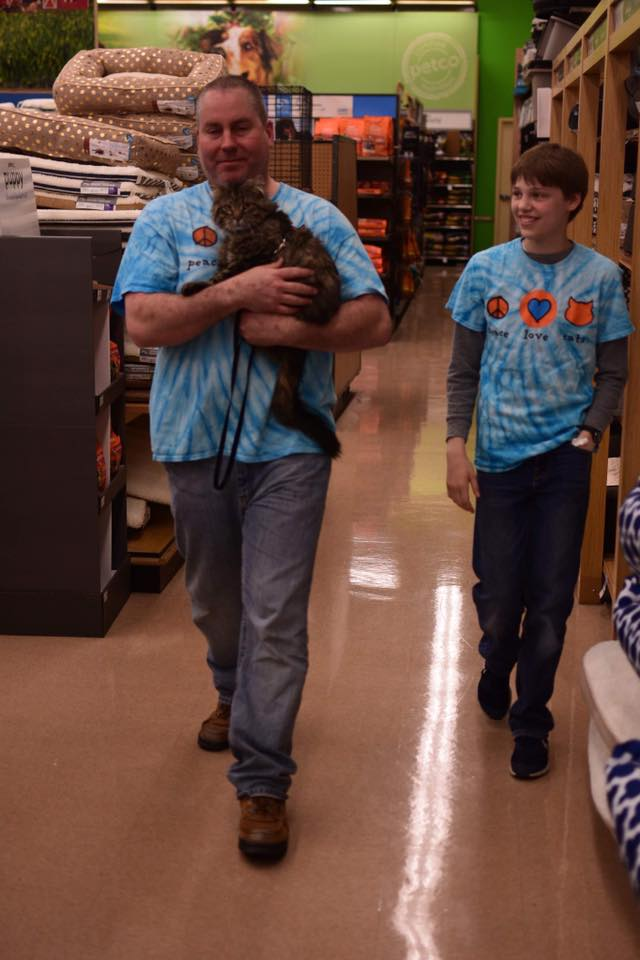

Volunteer
Cattails has a variety of needs and opprotunities to volunteer. We most need volunteers from 12pm - 4pm on Saturdays and Sundays. Please see our adoption page for more information about where our adoption events are located.

Some opportunities available:
- Cage cleaning at Petco Monday - Friday
- Help working adoption events
- Maintaining our foster equipment
- Taking cats to veterinary appointments
- Many other opprotunities
Foster a Cat
We are also looing for individuals to foster the cats waiting to find their furever home. For more information, please contact Natalie Young at 785-565-2433 (Call/Text)
